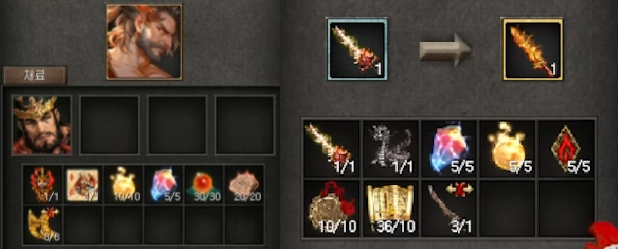
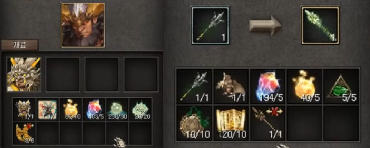
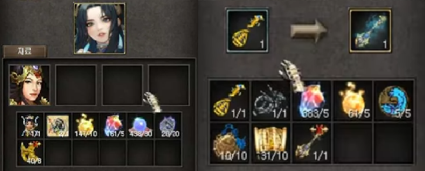
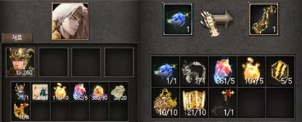

覺醒天王
可透過「須彌山」9點鐘方向的「帝釋天的使者」NPC覺醒天王
天王須達到260等級、信用等級130以上才可進行覺醒
可透過「須彌山」9點鐘方向的「帝釋天的使者」NPC製作覺醒天王武器
達到200等級以上才可透過「操練師_幻」NPC將幻獸「火龍」、「雷龍」、「風龍」、「水龍」封印為石像
覺醒持國天王

覺醒「持國天王」需要「武神的持國天王」、「神獸符朱雀(朱雀)」、「力量的根源」、「覺醒石」、「精氣之珠(火)」、「記憶的書板(火)」、「[遺物] 法輪碎片」道具。
「覺醒天王劍」需要「<強韌的> 高級天王劍」、「火龍之石像」、「覺醒石」、「力量的根源」、「死神印章(火)」、「高貴的力量飾品(火)」、「力量的記憶」、「[遺物] 磨損的覺醒天王劍」道具。
穿戴「覺醒天王劍」
使用技能時，會額外發動「火龍」、「古代火龍」，受到「古代火龍」傷害的怪物會額外減少5%魔法抵抗。變更「火龍」技能傷害計算公式，因「古代火龍」所減少的5%魔法抵抗最多可累積到30%。
技能特性
| 名稱 | 焰火無極陣 |
|---|---|
| 範圍 | 13 x 13 格 |
| 發動距離 | 21 格 |
| 效果 | 附帶持續5秒的灼傷傷害, 威力隨特性增加 |
| 效果2 | 「焰火無極陣」將根據使用次數疊加灼傷傷害，疊加時會增加傷害並更新持續時間，最多可疊加10次。 |
| 左邊特性 | 1 | 2 | 3 | 4 | 5 |
|---|---|---|---|---|---|
| 火劫 焰火無極陣傷害增加N% |
20% | 40% | 70% | 100% | 150% |
| 經眼 根據範圍內敵人數量最多10個 / 傷害增加N％ |
5% | 10% | 15% | 20% | 40% 施法距離+2 |
| 右邊特性 | 1 | 2 | 3 | 4 | 5 |
|---|---|---|---|---|---|
| 灼傷 燃燒傷害加N％ / 魔法抗性降低N％ |
20% 1％ |
50％ 3％ |
100％ 6％ |
150％ 10％ |
200％ 15％ |
| 層火 每層燒傷加N% / 持續時間加N秒 |
2% 2秒 |
5% 3秒 |
20% 5秒 |
50% 7秒 |
100% 10秒 燒傷效果2倍 |
覺醒廣目天王

覺醒「廣目天王」需要「武神的廣目天王」、「神獸符白虎(白虎)」、「力量的根源」、「覺醒石」、「精氣之珠(風)」、「記憶的書板(風)」、「[遺物] 法輪碎片」道具。
「覺醒天王戟」需要「《韌性的》高級天王戟」、「風龍石像」、「覺醒石」、「力量根源」、「逆流死神印章（風）」、「高貴力量飾品（風）」、「力量記憶」、「[遺物] 磨損覺醒天王戟」。
穿戴「覺醒天王戟」
「風極盡滅」傷害的目標會減少35%移動速度。使用技能時，會額外發動「風龍」「古代風龍」，受到「古代風龍」傷害的怪物會額外減少2%打擊抵抗。因「古代風龍」所減少的2%打擊抵抗最多可累積到30%。
技能特性
| 名稱 | 風極盡滅 |
|---|---|
| 範圍 | 15 x 15 格 |
| 發動距離 | 15 格 |
| 效果 | 會受到生命力影響且對地面怪物造成傷害 |
| 左邊特性 | 1 | 2 | 3 | 4 | 5 |
|---|---|---|---|---|---|
| 狂風 風極盡滅傷害增加N% |
20% | 40% | 70% | 100% | 150% |
| 連破 廣目天王的生命力增加N％ / N%固定傷害 |
2% 5% |
5% 8% |
10% 15% |
15% 25% |
30% 50% 增加固定傷害2.5倍 |
- 連破特性不受羊符 / 朱雀符影響
| 右邊特性 | 1 | 2 | 3 | 4 | 5 |
|---|---|---|---|---|---|
| 衝突 目標的打擊抵抗力抗性降低N％ |
1％ | 3％ | 6％ | 10％ | 15％ |
| 神步 每次攻擊加風極盡滅 N% 傷害 / 第3次附加傷害N% |
2% 10% |
5% 25% |
10% 50% |
20% 150% |
40% 200% 增加射程距離與傷害減少率 50% |
覺醒多聞天王

覺醒「多聞天王」需要「武神的多聞天王」、「神獸符玄武(玄武)」、「力量的根源」、「覺醒石」、「精氣之珠(水)」、「記憶的書板(水)」、「[遺物] 法輪碎片」道具。
「覺醒天王琵」需要「<神秘的> 高級天王琵」、「水龍之石像」、「覺醒石」、「力量的根源」、「死神印章(水)」、「高貴的力量飾品(水)」、「力量的記憶」、「[遺物] 磨損的覺醒天王琵」道具。
覺醒增長天王

覺醒「增長天王」需要「武神的增長天王」、「神獸符青龍(青龍)」、「力量的根源」、「覺醒石」、「精氣之珠(雷)」、「記憶的書板(雷)」、「[遺物] 法輪碎片」道具。
「覺醒天王珠」需要「<迅速的> 高級天王珠」、「雷龍之石像」、「覺醒石」、「力量的根源」、「死神印章(雷)」、「高貴的力量飾品(雷)」、「力量的記憶」、「[遺物] 磨損的覺醒天王珠」道具。